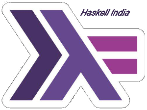

Contact

The smartest way to contact us is by joining the Haskell India Group on telegram. If you have any inhibitions, contact the admins of this group: @arvindd at Coimbatore, @SanchayanMaity at Bangalore, and @ajnsit at Delhi - and we will be most happy to help you integrate in the group.
We are also present on a github organisation of the same name. Of course, since we are on github, a few of the developers are also on Gitter.
Since the telegram group is most active, we recommend that you start from there.